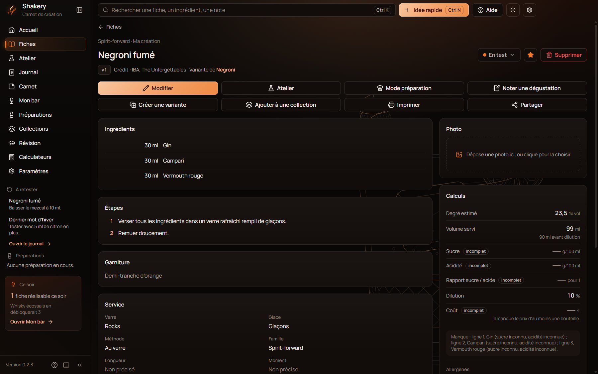
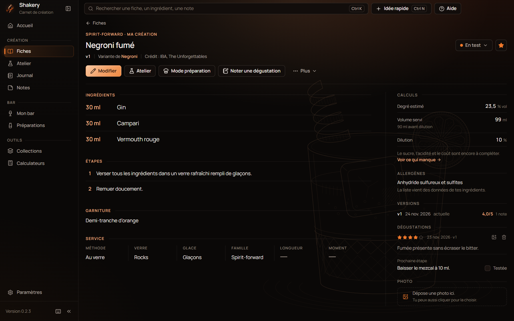
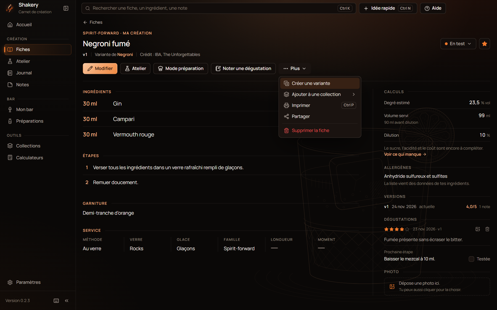

Shakery · refonte ergonomique · planche 03 sur 1024 novembre 2026
Fiche Negroni fumé sur la grammaire du mode préparation
Avant

Ce qui change
- L’en-tête reprend le mode préparation avec une ligne de contexte en petites capitales cuivre (Spirit-forward, Ma création), le titre, puis une ligne méta (v1, Variante de Negroni, crédit) coupée par de fins filets, pour lire l’identité de la fiche d’un coup d’œil.
- Le statut « En test » et le favori restent à droite du titre, et Supprimer quitte l’en-tête pour le menu Plus, afin qu’aucune action destructrice ne soit à portée de clic direct.
- Les huit boutons sur deux rangées deviennent une seule ligne avec Modifier en cuivre plein, Atelier, Mode préparation et Noter une dégustation en contour, puis un bouton fantôme Plus.
- Le menu Plus regroupe Créer une variante, Ajouter à une collection (avec un sous-menu), Imprimer avec son raccourci Ctrl P et Partager, puis Supprimer la fiche en rouge sous un filet ; il est montré ouvert dans 03-fiche-complet.
- La colonne principale n’a plus aucune carte et enchaîne Ingrédients, Étapes, Garniture et Service sous des titres en petites capitales cuivre avec filet.
- Les doses passent en 16 px, en cuivre et en chiffres tabulaires, dans une colonne de largeur fixe, ce qui reprend le mode préparation à une taille adaptée à l’écran de travail.
- Chaque étape garde un numéro simple en cuivre, sans rond, et les étapes sont séparées par un filet comme les ingrédients.
- Le service tient sur une seule ligne de six valeurs (Méthode, Verre, Glace, Famille, Longueur, Moment) séparées par des filets verticaux, et Longueur et Moment, non précisés, affichent un trait dessiné.
- Profil et Origine sortent du bloc Service, parce que l’origine figure déjà dans la ligne de contexte et que le profil n’est pas précisé sur cette fiche.
- La colonne d’appoint perd ses cartes et ne garde qu’un filet à gauche et des titres gris, pour Calculs, Allergènes, Versions, Dégustations et Photo.
- Dans Calculs, les quatre badges « incomplet » et le paragraphe « Manque » laissent place à une seule phrase discrète, « Le sucre, l’acidité et le coût sont encore à compléter. », suivie du lien « Voir ce qui manque ».
- Les allergènes s’affichent en texte simple au lieu d’une pastille, avec une explication raccourcie à une ligne.
- La dégustation n’est plus une carte dans la carte ; les étoiles, la date et la version tiennent sur une ligne, la note suit en texte courant, puis la prochaine étape apparaît sous un filet avec sa case « Testée », sans fond dégradé.
- La photo descend en bas de la colonne d’appoint, dans une petite zone de dépôt en pointillé.
- Le motif gravé de la scène est atténué sur cette planche (opacité 0,14 au lieu de 0,36), parce que sans cartes il passait sous le texte de la colonne d’appoint.
- L’écran tient désormais en entier dans 900 px de haut, si bien que 03-fiche-complet garde la même hauteur et sert à montrer le menu Plus ouvert.
À trancher
- Maintenant que les cartes ont disparu, le motif gravé de fond passe sous le texte. Préfères-tu l’atténuer sur la fiche, comme dans la planche, ou le garder tel quel sur tous les écrans ?
- Profil et Origine ne figurent plus dans la ligne Service. Veux-tu les afficher ailleurs quand ils sont précisés, par exemple le profil dans la ligne méta ?
- Le lien « Voir ce qui manque » peut ouvrir un panneau qui détaille les valeurs manquantes ligne par ligne, ou mener directement aux fiches ingrédients. Lequel préfères-tu ?
- Le crédit « IBA, The Unforgettables » vient de la fiche d’origine. Doit-il rester affiché sur une variante qui est ta propre création ?
- Les boutons photo et suppression d’une dégustation restent visibles en permanence. Veux-tu qu’ils n’apparaissent qu’au survol de la note ?
Après

Après, page complète
